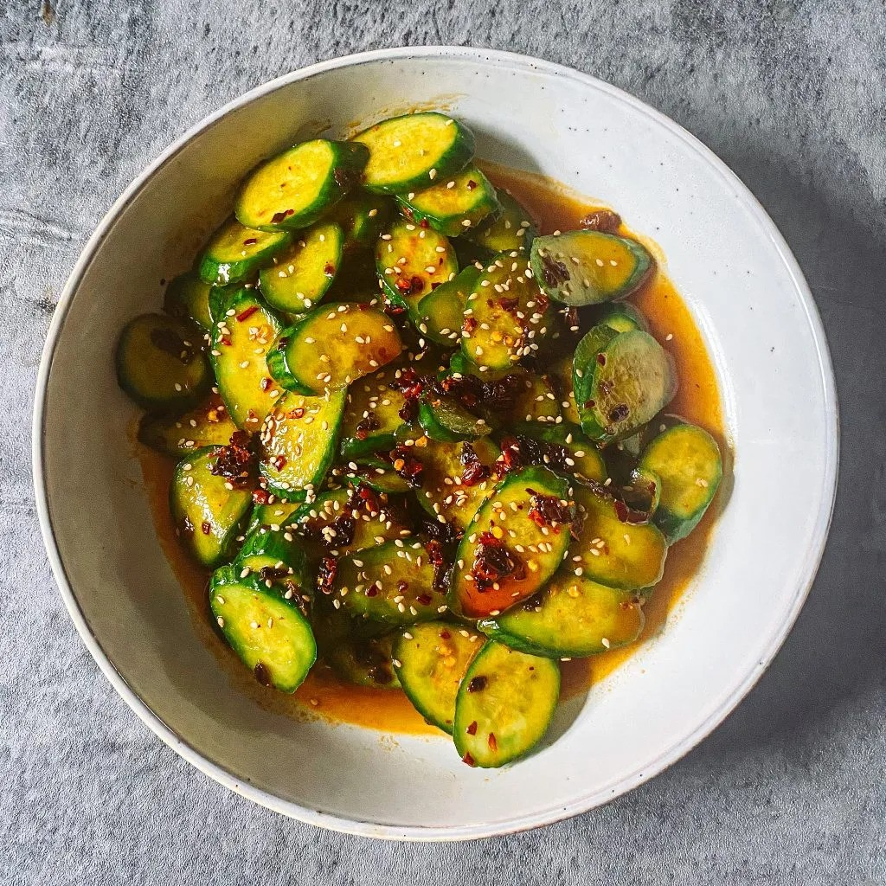

Asian Cucumber Salad

Description
This simple and refreshing salad comes together quickly for a
spicy and tangy side salad or snack!
Ingredients
- 5 Persian cucumbers
- 1/2 tsp salt
- 1/2 tbsp sesame oil
- 3/4 tbsp light soy sauce
- 1 tbsp sugar
- 3/4 tbsp rice vinegar
- 1 tbsp chili oil
- 1/2 tbsp sesame seeds
Steps
-
Rinse and slice one end of the cucumber at an angle.
-
Continue slicing at an angle. Slices should look more oval than round.
-
Add to a bowl/container and sprinkle 1/2 tsp of salt.
-
Mix that well and refrigerate for at least 20 minutes to draw out the water.
-
Drain the water and give the cucumbers a quick 10 seconds rinse before
returning back to the bowl/container.
-
Add sesame oil, light soy sauce, sugar, rice vinegar, chili oil and sesame seeds.
-
Stir until well combined and serve. Enjoy!
Source: Farah J. Eats:
Easy Asian Cucumber Salad